SAFARI
Users
- General & History
- Using Cucumbers - flavor & Texture
- Varieties
- Health & Nutrition
General & History
Cucumbers are probably native to northern India and were cultivated there and in Western Asia well over 3000 years ago. They were much favored by the Romans who spread them to other parts of Europe. They didn't get to England until about the 14th century, and have to be grown in hothouses there. Cucumbers arrived in the Americas in the early 16th century. When they arrived in China and Japan is uncertain but is thought to be somewhat later than their arrival in Rome.
The durable "green blimp" cucumbers we are accustomed to in the U.S. are a relatively recent development. In earlier times cucumbers were similar to the Persian and often thinner and longer.
Besides the fruits, which botanists call a "modified berry", young shoots and leaves of the vine can be cooked and eaten as greens.
Using Cucumbers
There are two locations of flavor in cucumbers, the skin and the seed mass. Sample an over-ripe cucumber and you'll find the slightly yellow seed mass to have a stronger and quite distinctly cucumber flavor. Personally I don't mind that flavor, in moderation, but some people don't like it.
You'll find many sources telling you English cucumbers have more flavor than the standard garden cucumber. Peel them both and you'll find the garden cuke more flavorful, it's just that the English doesn't have to be peeled and the thick bitter skin of the garden variety does.
A better compromise is to use Persian or Japanese cucumbers which have thin non-bitter skin but enough seed mass to be more flavorful than the English. Unfortunately they don't keep and have to be used within a few days. Kerbys are midway between in seediness, bitterness, and toughness of skin, and also are not waxed.
for best flavor the seed mass should be included in recipes if possible. This is not possible in cases where the liquid will bleed out and dilute the recipe - then the seeds must be scooped out. When I do this I scrape the seeds into a bowl, add some salt and eat the seed mass as a snack while I cook.
Recipes that call for seeding cukes usually presume the big "green blimps" but if you use Persians or Japanese cucumbers you probably won't have to seed them (or peel them) and flavor will be better.
In salads, once the dressing is applied, Cucumbers will start to bleed water due to salt in the dressing. If you need your salad to be durable, as for long buffet service or making ahead, slice the cukes for the recipe, then put them in a bowl, sprinkle well with salt and let sit for at least 20 minutes - longer is better. Then rinse them and drain them. You may need to cut down the amount of salt in the recipe, as the cucumbers will retain some salt.
Cucumber Varieties
Cucumber - (standard issue)
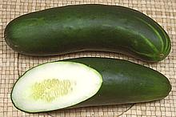
[Garden Cucumber, Pole Cucumber, Market Cucumber, Green Blimp; Cucumis sativus]
These cucumbers are grown on fully functional vines with both male and female flowers, so they have a large seed mass and plenty of seeds. Consequently they have more real cucumber flavor than seedless varieties, provided you use the seed mass.
The skin is fairly tough and bitter so they are almost always peeled. Since they'll be peeled anyway growers seal them with a heavy coating of wax for longer storage - they'll last at least two weeks in the fridge. You do want to peel them because you don't know who sponsored the FDA studies certifying that wax as "edible".
Size varies widely but the photo specimen is 9-1/4 inches long, 2-3/8
inches diameter and weighed 1-1/4 pounds. A more typical supermarket size
would likely be 12 ounces to a pound but 2 pounders are often available at
produce markets. The cut one was picked quite young so the seeds are
immature and the seed mass is relatively small. When cucumbers become
over-ripe they start to yellow, the seeds start to harden and the seed
mass gets a stronger flavor.
Armenian Cucumber
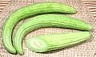
Not a cucumber, it's a Melon. See our
Armenian Cucumber page.
Beijing Cucumber
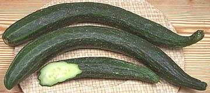 [Peking Cucumber]
Though it looks sort of like an overgrown European cucumber with tiny white spine spots all over it, the Beijing is not "seedless". It can, in fact have a higher proportion of seed mass than a garden cucumber does, improving the flavor over seedless varieties.
The skin is very thin and they are not waxed so you don't have to peel
them, but it means they will spoil quickly so use them right away. The
larger photo specimen was 19 inches long, 2 inches diameter and weighed 1
pound 6 ounces. So far these are available in only a few of the East /
Southeast Asian markets in Los Angeles and prices are still a quite high -
about 2016 US $1.19 / pound, while Persians can be had here for 69 cents
/ pound, and gardens for less than 25 cents / pound in season.
Dosakai
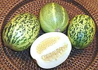 [Lemon Cucumber, Cucumis. sativus]
These cucumbers get their name from being about the size and shape of a lemon, and bright yellow varieties are popular in India. The photo specimens are green with whole or broken stripes, the variety grown in Southern California. They are seldom available even in Indian markets and are sold at a high price so they're more a curiosity than practical ingredient right now.
These cucumbers are sweeter than other varieties and do not need to be
peeled. They go well in salads but in India they are most often cooked as
an ingredient in recipes or made into pickles and chutneys.
English Cucumber
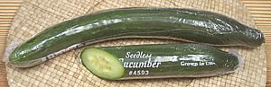 [#4593, Hothouse Cucumber, Burpless Cucumber, Seedless Cucumber, European Cucumber, Cucumis sativus]
This is a variety of the European Cucumber selected for large size and
straightness. This makes them more economical to shrink wrap in plastic
to extend their shelf life. The photo specimen was fairly typical at
14-1/2 inches long, 1-3/4 inches diameter at the thickest point and
weighed 14 ounces. See
European Cucumber for all further
details.
European Cucumber
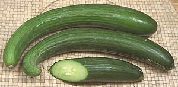 [Hothouse Cucumber, Burpless Cucumber, Seedless Cucumber, English Cucumber]
These cucumbers are grown on vines that produce only female flowers. Since the flowers have no way to get knocked up they produce seedless fruit. Seeds to grow them are expensive because to produce them, rare vines that have one or more male flowers must be found.
Growing the vines take special care so bees and other pollinating insects cannot access the flowers, or hybrid seeds will develop. Larger straighter varieties are shrink wrapped in plastic for longer shelf life so they can be shipped to distant markets and are called English Cucumbers.
The larger of the photo specimens was 13 inches long (uncurled) 1-3/4
inches diameter at the thickest point and weighed 10 ounces. Typical
shrink wrapped specimens are a little bigger but generally weigh less
than a pound.
Details and Cooking.
Gherkin - True
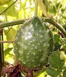 [West Indian Gherkin, Bur Cucumber, Gooseberry Gourd (English); Concombre Antillais, Cornichon des Antilles, Ti-concombre, Macissis (French); Pepino das Antilhas, Cornichão das Antillas, Machiche, Maxixé (Portuguese); Cucumis anguria]
True Gherkins are a small non-sativa cucumber native to southern
Africa from Zaire south to Botswana and naturalized in Madagascar, but
are best known for cultivation in the Caribbean region. The non-bitter
less spiky varieties developed in the Caribbean have been reintroduced
to Africa and are now cultivated there. In Africa, leaves of the bitter
varieties are used as greens, and some of the non-bitter varieties
are pickled. In the U.S. this plant is grown in gardens for private use
in Florida.
Details and Cooking.
Photo © source and licensing lost.
Gherkin - Cucumber
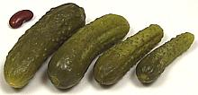 [Cornichon (French), Cucumis sativa]
Any tiny immature cucumber used for pickling, generally less than three inches long. Since few people have ever seen a real gherkin this naming has been a successful subterfuge.
India has become a major grower and pickler of these cucumbers taking
advantage of low labor rates, but this industry is ecologically
questionable and there have been contract abuses as well. The photo
specimens are from Bulgaria with the largest measuring 2-7/8 inch long,
7/8 inch diameter and weighing 5/8 ounce.
Details and Cooking.
Gherkin - Indian
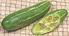
It's a gourd - see our Tindora
page.
Hothouse Cucumber
- see European / English Cucumbers. In most regions it means specifically the "English" packaging of the European cucumber.Japanese Cucumber
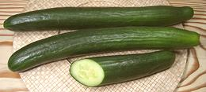 [Cucumus sativus]
Not seedless but with much fewer seeds than garden cucumbers, and they are harvested when the seeds are very immature so are not noticeable. Japanese cucumbers are sold unwaxed. They are several varieties, but they generally have bumpy dark green skins, which may have white spine dots. They are similar to the Persian cucumber but much larger and most varieties are sturdy enough to be grown in open fields in California. There are varieties ranging up to three feet long and 2 inches in diameter but the most popular are 8 to 12 inches long and very straight.
Millions are grown in Southern California but they are
rarely seen in markets, because our thousands of sushi bars (most of
which, to the distress of the Japanese, are run by Koreans now)
consume the crop. The photo specimens, purchased from a Korean market
in Los Angeles (La Cañada Flintridge) were up to 14 inches long,
1-3/4 inches diameter and weighed 1 pound 2-5/8 ounces.
Kirby Cucumber
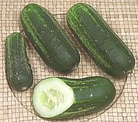 [Liberty Cucumber, Pickle, Cucumus sativus]
You can't pickle a waxed cucumber so these are never waxed. That means you can eat them skins-on but also they will spoil quickly - even in the fridge they'll start getting slimy in just a few days. Peeled they have a little less flavor than the Green Blimps because the seed mass is so immature - they're often picked so young they look almost "seedless".
These vary greatly in size depending on how young they're picked. The largest of the photo specimens was 5-1/4 inches long, 2 inches diameter, and weighed 7-3/8 ounces. The smallest was 3-1/2 inches long, 1-3/8 inch diameter at the big end and weighed 1-3/4 ounces.
The skin is a bit tougher than that of the seedless varieties (though
not bitter) so for some uses you may wish to peel them, or they may be
partially peeled to decorative effect. They do well in salads and for
cooking.as well as for pickling.
Peking Cucumber
- See Beijing Cucumber.Persian Cucumber
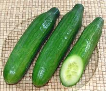 [Mediterranean Cucumber (obsolete market name); Cucumis sativus]
A mostly seedless cucumber normally sold unwaxed, so you can eat them skin-on. There are several cultivars, so they may vary somewhat in size and shape, but they all taste the same. Persians tend to have a few seeds, but they are picked so young they are no bother. These are wildly popular here in Los Angeles, every produce market having a mountain of them. The photo specimens averaged 7 inches long, 1.5 inches diameter, weighing 5-3/4 oz. This is larger than average. Vegetable crops in California keep getting bigger for ease of harvesting - but now there is a "Mini" version too - see Details and Cooking.
Pickle
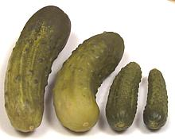 [Cucumis sativus]
While many vegetables are pickled, the cucumber so dominates the form it's the one you can call just "pickle" without a modifier. The cucumbers used are Kirby type or similar in the U.S. but other varieties may be used elsewhere.
"Quick pickles" are made with cucumbers, a vinegar brine and spices.
Natural pickles are made by packing cucumbers with water and salt to
naturally ferment and make their own sourness. They are then cleaned up
and processed with spices and other ingredients depending on what style
pickle you're making.
Wild Cucumber - California
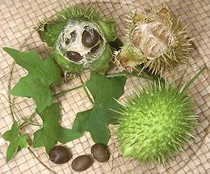 [Cucamonga Manroot, Marah macrocarpus: California Manroot, Marah fabaceus: other Marah species also Echinocystis lobata]
These perennial cucumbers are quite different from Cucumis cucumbers in the way the fruit functions. Rather than fleshy, the fruit is spiny and dry. When ripe it dries completely and splits at the end to spill the large seeds out. The fruit is not eaten and some say the unripe seeds may be "mind altering" but I haven't tried to find out. California Manroot is found over most of the state while Cucamonga Manroot is found over most or Southern California down to Baja.
All parts of the plant are bitter but the leaves have reportedly been used as a vegetable. The root tubers can weigh well over 200 pounds and were crushed by Native Americans for a toxin to stun fish with, so you probably don't want to try eating those. A soap-like substance has been extracted from the roots.
I have lots of these on my property in La Crescenta, CA, but growth
and fruiting are very dependent on early spring rainfall. The photo,
showing foliage, an unripe fruit, a just opened fruit with seeds, and a
drying empty pod was taken during 2008, a very good year for these. This
year, 2014, there was very little foliage and no fruit.
Wild Cucumber - Other
"Wild Cucumber" is a name used commercially for the Armenian Cucumber, which is actually a melon. There is also an African Wild Cucumber (Cucumis africanus) which looks a lot like the California item but they're not closely related, and the African one is edible. Fruit and leaves are eaten in Africa but only fruit in Madagascar.
Health & Nutrition
Cucumbers are largely water and eaten at an early stage where their seeds are immature and haven't developed much protein. They aren't nutrition powerhouses but they do have a broad range of vitamins and minerals in significant amounts, and they are very low in calories and fat.
Way back in the early '70s I used to get a nutritional publication from one of Ralph Nader's organizations. Ralph was saying pickles should be taken off the market because of their cost / nutritional content ratio was so low. The vitamin C content is degraded by pickling but some other nutrients may become more available - but I really don't think people are eating pickles for their nutritional value, Ralph. They eat them for taste. Of course Ralph was also saying Yogurt should be taken off the market because it was too much to pay for a glass of milk.